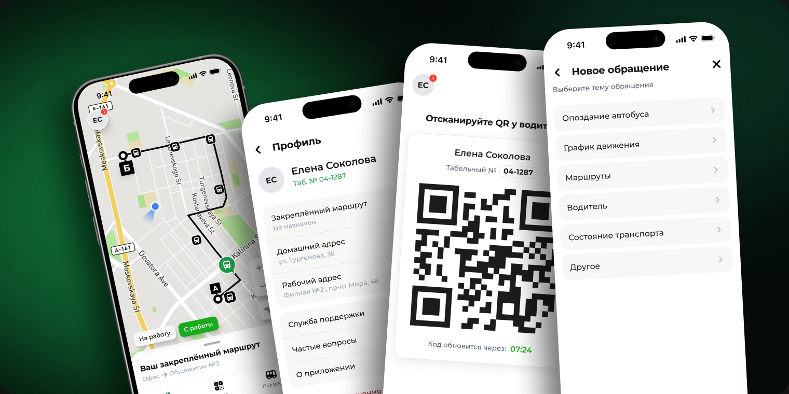
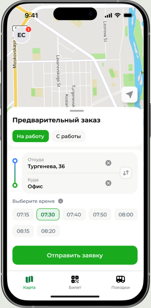
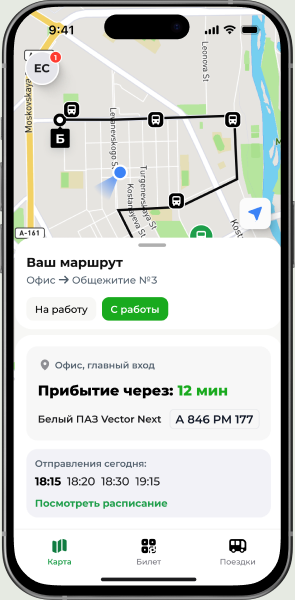
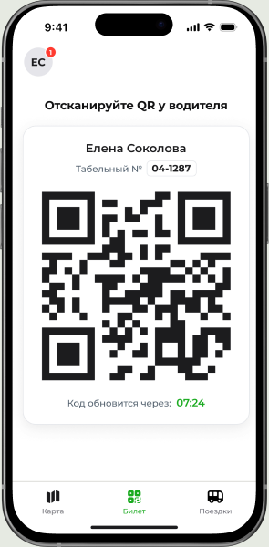
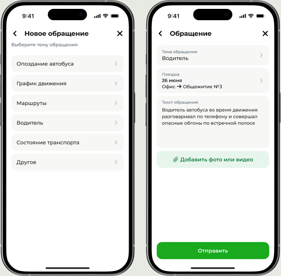

А
Персональный предзаказ
Сотрудник сам выбирает направление и время — интерфейс строится вокруг формы заказа и подтверждённой поездки.
Внутренний продукт для крупного банка · NDA
Экраны показаны с вымышленными данными

01 · Контекст
Приложение для сотрудников компании: служебный транспорт до работы. Два сценария — персональный предзаказ с выбором направления, даты и времени или закреплённый служебный автобус, который назначается автоматически.
Корпоративная развозка решает типовые задачи крупного работодателя: доступность офисов, куда сложно добраться общественным транспортом, предсказуемое начало смен и транспортная льгота как часть соцпакета. Приложение при этом даёт бизнесу то, чего не даёт «автобус по расписанию»: данные о реальном спросе для оптимизации маршрутов и контроль посадки по QR.
02 · Подход
Сотрудник сам выбирает направление и время — интерфейс строится вокруг формы заказа и подтверждённой поездки.
Транспорт назначает организация, поэтому сотруднику не нужно ничего делать. Интерфейс строится вокруг самого важного: маршрута на карте и времени прибытия.
Я спроектировала оба сценария как единый пользовательский путь. Предзаказы помогают понять, где и когда людям регулярно нужен транспорт. Когда спрос становится стабильным, появляется постоянный маршрут.
03 · Решения
Сменные и гибридные графики, разовые поездки, работа в нетиповое время — для этих сценариев ежедневный маршрут избыточен. Предзаказ позволяет выбрать направление, дату и время подачи транспорта. Для бизнеса заявки делают нерегулярный спрос измеримым: транспорт назначается по фактической потребности, а не резервируется заранее.

Сотрудники с постоянным графиком закрепляются за маршрутом с регулярными рейсами — транспорт назначается автоматически, ежедневные действия не требуются. Экран отвечает на главный вопрос — через сколько минут автобус прибудет на остановку; положение машины на карте и расписание каждой остановки доступны по касанию. Бизнес получает предсказуемую загрузку маршрутов и планирование по фактическим спискам.

Водитель сканирует код при входе. Для компании это решает две задачи: транспортом пользуются только сотрудники — код привязан к учётной записи и автоматически обновляется, пересланный скриншот к моменту посадки уже недействителен, — а учёт поездок ведётся сам: кто, когда и каким рейсом, без бумажных списков.

Вместо свободного текста — структурированные данные. Поездка из истории, тип обращения и фото позволяют диспетчеру быстрее обрабатывать заявки, а бизнесу — анализировать качество маршрутов и работу перевозчиков. Шаг выбора поездки можно пропустить: не каждый вопрос связан с поездкой.

04 · Логика продукта — как сценарии связаны
Сотрудник заказывает поездки вручную
Система видит регулярность
Постоянный маршрут — заказывать ничего не нужно
Чем дольше живёт продукт, тем меньше действий требует.